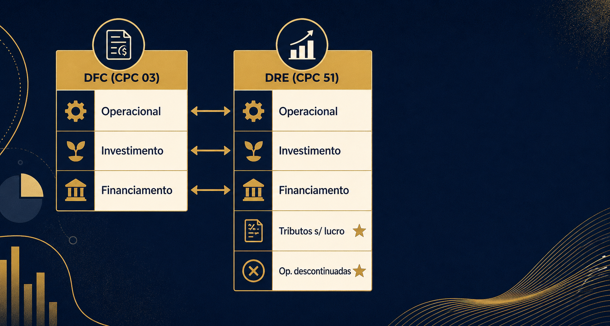

Imagina que você está estudando há meses pra contabilidade do AFRE-SP 2027. Já dominou DRE base do CPC 26 que você já estudou, já decorou as 3 categorias da DFC (operacional, investimento, financiamento). Aí abre o edital e vê: "CPC 51 — apresentação das demonstrações contábeis". Nova norma, 5 categorias obrigatórias na DRE, 3 subtotais. Pânico?
Não precisa. A boa notícia que ninguém te conta: a Revisão de Pronunciamentos Técnicos nº 28 acabou de oficializar o paralelo entre DFC e DRE-CPC51. Quem domina DFC do CPC 03 já tem 70% do mapa das 5 categorias DRE CPC 51 — vou mostrar onde a outra parte se encaixa, item por item, e como Cebraspe, FGV e FCC vão cobrar essa nova arquitetura nas provas de 2027 a 2029.
Por que dominar DFC já te dá 70% do CPC 51
A novidade central do CPC 51 está no item 47: toda receita e despesa da DRE precisa ser classificada em uma de cinco categorias — operacional, investimento, financiamento, tributos sobre o lucro e operações descontinuadas. Não é sugestão, é regra. E é onde o concurseiro experiente acelera.

Por quê? Porque três dessas categorias carregam exatamente a mesma intuição que a DFC do CPC 03 já te ensinou. Operacional, investimento e financiamento — tem três no caixa, tem três na DRE-CPC51. A diferença é que a DRE acrescenta duas (tributos + descontinuadas) e olha pro resultado em vez do caixa. Mas a família de itens que cai em cada categoria é praticamente a mesma.
E mais: a Revisão de Pronunciamentos Técnicos nº 28 atualizou o CPC 03 em função do CPC 51. O ponto de partida da DFC pelo método indireto agora é lucro operacional (em vez de lucro do período), alinhando explicitamente as duas demonstrações. E juros e dividendos perderam a opção de ser operacionais — passam a investimento (recebidos) ou financiamento (pagos), exatamente como a DRE-CPC51 manda.
| Categoria | DFC (CPC 03 R2) | DRE (CPC 51) | Diferença |
|---|---|---|---|
| Operacional | Atividade principal, definição residual | Atividade principal, definição residual (item 52) | Mesma intuição; agora padronizada |
| Investimento | Aquisição/venda de ativos longo prazo + retornos autônomos | Receitas/despesas de ativos com retorno autônomo (itens 53-58) | DFC olha caixa; DRE olha resultado |
| Financiamento | Captação/pagamento de dívida e capital | Receitas/despesas de passivos financeiros (itens 59-66) | Mesma intuição |
| Tributos sobre o lucro | — | Aplicação do CPC 32 (item 67) | Categoria nova na DRE |
| Operações descontinuadas | — | Aplicação do CPC 31 (item 68) | Categoria nova na DRE |
Categoria operacional — o "tudo que sobra" (item 52)
A primeira categoria é definida por exclusão. Item 52 do CPC 51: a entidade classifica como operacional toda receita e despesa que não se encaixe em investimento, financiamento, tributos sobre o lucro ou operações descontinuadas. É o "baú" residual da DRE.
Se isso soa esquisito, lembra da DFC do CPC 03: lá também a atividade operacional é definida por exclusão das outras duas (investimento + financiamento). É a mesma lógica didática, agora com 5 categorias em vez de 3. Quem já entendeu o resíduo na DFC entende aqui sem dor.
Conceitualmente, a categoria operacional reúne o core business da empresa: receita de vendas, custo do produto vendido, despesas comerciais, despesas administrativas, despesas gerais. É o que historicamente o senso comum chamava de "resultado operacional".
Categoria de investimento (itens 53-58)
A categoria de investimento concentra receitas e despesas de ativos cujo retorno independe das operações principais da empresa. O item 53 lista três grupos: investimentos em coligadas/joint ventures/controladas não consolidadas; caixa e equivalentes; e outros ativos com retorno autônomo.
A palavra-chave é independência. Uma aplicação financeira de sobras de caixa rende juros sem depender do core business — vai pra investimento. O mesmo vale pra equivalência patrimonial de coligada: rendimento autônomo, vai pra investimento. Ganhos com propriedade pra investimento (item 54) — mesma família.
Tem duas exceções importantes nos itens 55 e 56: entidades cuja atividade principal é investir em outras entidades (holdings, fundos de PE) ou em ativos financeiros (fundos de investimento, tesourarias) reclassificam essas receitas pra operacional. Pra elas, investir é o que pagam as contas. Voltaremos a esse ponto na "reviravolta" do item 49 — é uma das 6 pegadinhas do CPC 51 mapeadas no post anterior.
Categoria de financiamento (itens 59-66)
Funciona como contraparte da categoria de investimento — só que do lado dos passivos. Cobre receitas e despesas que vêm de empréstimos, financiamentos, debêntures e instrumentos híbridos com componente de dívida.
O item 59 traz a distinção crítica: a empresa precisa separar passivos resultantes de transações que envolvem apenas captação de financiamento (item 59(a) — empréstimos bancários, debêntures, financiamento direto) dos passivos que não envolvem apenas captação (item 59(b) — fornecedores, obrigações trabalhistas, provisões com componente de juros).
Pra os passivos puramente financeiros (item 60), tudo entra em financiamento — juros, custos de transação, ganhos e perdas de mensuração. Pra os mistos (item 61), só entram os juros que a empresa identifique como tal pra fins de outros pronunciamentos. A parcela operacional desses passivos mistos permanece dentro da categoria operacional.
Como na DFC do CPC 03, a intuição é simples: ativo autônomo que rende juros vai pra investimento; passivo que cobra juros vai pra financiamento. Esse pareamento é a espinha dorsal da arquitetura do CPC 51.
Garanta sua vaga na pré-venda do curso completo
Lançamento em junho de 2026 · vagas limitadas. Contabilidade ensinada com lógica, não com decoreba.
Quero entrar na listaTributos sobre o lucro e Operações descontinuadas (itens 67-68)
As duas categorias mais simples — e isso é proposital. Item 67 resolve tributos sobre o lucro em uma linha: aplica o CPC 32 (Tributos sobre o Lucro), mais quaisquer diferenças cambiais relacionadas. Na prática, IRPJ e CSLL, corrente e diferida, da forma como o CPC 32 já calcula. O CPC 51 não muda o cálculo — muda só onde o imposto aparece na DRE: em categoria própria, separada das demais.
Item 68 cuida de operações descontinuadas: aplica o CPC 31 (Ativo Não Circulante Mantido pra Venda e Operação Descontinuada). Conceitualmente, operação descontinuada é componente da entidade já alienado ou classificado como mantido pra venda, representando linha de negócios separada e relevante. O Balanço Patrimonial (que continua igual) também é afetado pela reclassificação pra circulante exigida pelo CPC 31.
Cuidado com uma confusão clássica: tributos sobre o lucro ≠ tributos sobre vendas. IRPJ e CSLL vão pra categoria 4 (item 67). ICMS, PIS, COFINS, IBS e CBS reduzem a receita bruta e ficam na categoria operacional. Cebraspe adora cobrar essa diferença em literal curta.
A reviravolta: atividade principal especificada (item 49)
Aqui está o ponto onde 80% dos candidatos vão escorregar. Os itens 49-51 do CPC 51 criam um regime especial pra entidades cuja atividade principal de negócio é (a) investir em determinados ativos OU (b) conceder financiamento a clientes. Bancos, seguradoras, fundos, financeiras, leasing.
Pra essas entidades, receitas e despesas que normalmente seriam classificadas em investimento ou financiamento são reclassificadas pra operacional. Item 65 cuida do banco que fornece crédito (juros recebidos = operacional). Item 56 cuida do fundo de investimento (juros e ganhos de capital = operacional). A lógica é simples: se a entidade vive desse retorno, ele é o operacional dela.
| Operação | Indústria | Banco | Fundo de investimento |
|---|---|---|---|
| Juros de aplicação financeira | Investimento (item 53(b)) | Operacional (item 56) | Operacional (item 56) |
| Juros de empréstimo concedido a cliente | Não típico | Operacional (item 65) | Não típico |
| Juros pagos em empréstimo captado | Financiamento (item 60) | Operacional, na operação principal (item 65(a)(ii)) | Não típico |
| Equivalência patrimonial de coligada | Investimento (item 53(a)) | Operacional, se holding | Operacional, se fundo de PE |
3 subtotais e como tudo isso cai em prova
As 5 categorias produzem 3 subtotais obrigatórios na DRE (item 69):
- Lucro operacional (item 70) — soma da categoria operacional. É o total do "baú" residual.
- Lucro antes de financiamento e tributos sobre o lucro (item 71) — lucro operacional + categoria de investimento. Mostra o desempenho antes da estrutura de capital e da carga tributária.
- Lucro líquido (item 72) — soma de tudo. Inclui financiamento, tributos sobre lucro e operações descontinuadas.
Há uma exceção importante no item 73 — bancos e instituições financeiras que aplicam o item 65(a)(ii) ficam dispensados de apresentar o subtotal do item 71 (porque "lucro antes de financiamento" não faz sentido pra entidade cuja operação é financiamento). Esse é exatamente um dos pontos cobertos pelas 6 pegadinhas que vão dominar 2027 que mapeei em outro post — onde também detalhei como as bancas vinham cobrando o CPC 26 antes da transição.
Pra prova, a banca brasileira vai cobrar em três fases: literal (memorizar lista), comparativa (CPC 26 × CPC 51) e naturalizada (CPC 51 como base). De 2027 a 2029, fases 1 e 2 dominam. A combinação das 5 categorias DRE CPC 51 com os 3 subtotais e a exceção do item 49 é o trio que aparece em maioria absoluta das questões esperadas.
☐ Identifiquei o tipo de entidade (industrial × banco × fundo)?
☐ A entidade aplica o item 65(a)(ii) ou 56? Se sim, juros viram operacional.
☐ A receita/despesa cabe em alguma das 4 categorias técnicas (investimento, financiamento, tributos lucro, descontinuada)?
☐ Se não cabe, é operacional (residual).
Esse algoritmo de 4 perguntas cobre cerca de 90% das questões esperadas.
Perguntas frequentes
Como classificar receita e despesa nas 5 categorias do CPC 51?
Aplique o algoritmo de exclusão. Comece pelas 4 categorias técnicas: é tributo sobre o lucro (CPC 32)? É operação descontinuada (CPC 31)? É investimento (item 53 — coligadas, caixa, ativos com retorno autônomo)? É financiamento (item 59 — passivo financeiro)? Se o item não cabe em nenhuma, é operacional (item 52, residual). Atenção à exceção do item 49 — se a entidade tem atividade principal especificada, juros e dividendos típicos podem virar operacional.
Qual a diferença entre categoria operacional do CPC 51 e operacional da DFC?
Mesma intuição (definição residual), escopos diferentes. Na DFC do CPC 03, "operacional" é tudo que não cai em investimento ou financiamento — 3 categorias no total. No CPC 51, "operacional" é tudo que não cai em investimento, financiamento, tributos sobre o lucro ou operações descontinuadas — 5 categorias no total. A DFC olha caixa; a DRE olha resultado. Mas a família de itens que vai pra cada uma é praticamente a mesma, agora oficializada pela Revisão de Pronunciamentos Técnicos nº 28.
Como bancos classificam juros no CPC 51?
Como operacional (item 65 — atividade principal especificada). Pra um banco comercial, conceder crédito é o core business. Logo, juros recebidos de operações de crédito são receitas operacionais, não financeiras. O mesmo vale pra juros pagos sobre captações (item 65(a)(ii)) e pra fundos de investimento que vivem de aplicações (item 56). Esse é o ponto número um que diferencia entidades financeiras das demais.
A DFC mudou com o CPC 51?
Sim, via Revisão de Pronunciamentos Técnicos nº 28. Duas mudanças: (1) o ponto de partida da DFC pelo método indireto agora é lucro operacional (em vez de "lucro do período"), alinhando com a DRE-CPC51; (2) juros e dividendos perdem a opção de serem classificados como operacionais — pagos vão pra financiamento, recebidos vão pra investimento. Isso afeta diretamente a DFC que você estudou pelo CPC 03 antes de 2026 — é hora de atualizar.
A transição CPC 26 → CPC 51 vai marcar as provas de 2027 a 2029. Quem larga na frente agora — dominando as 5 categorias DRE CPC 51 pelo paralelo da DFC, sem reaprender do zero — chega na prova com vantagem real. Mais do que decorar listas, isso é exercício de fluência contábil: enxergar a lógica antes da regra escrita, pra que cada item da norma pareça óbvio quando aparecer na questão.
Nas próximas semanas vou abrir o terceiro pilar dessa transição — MPMs e EBITDA ajustado sob o CPC 51 — em post separado, fechando o trio que cobre cerca de 80% do CPC 51 pra concurso. Estudar sozinho é bom, amigo(a) concurseiro(a); acompanhado é muito melhor. Vamos quebrar a banca.
Pronto pra estudar contabilidade com lógica?
Entre na pré-venda do curso completo de Contabilidade pra concurso. Lançamento em junho de 2026.
Quero entrar na lista